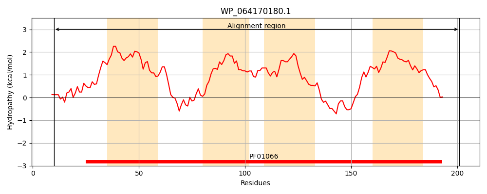
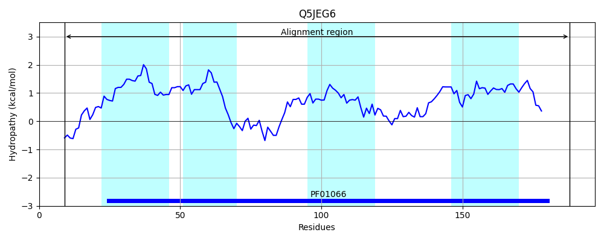
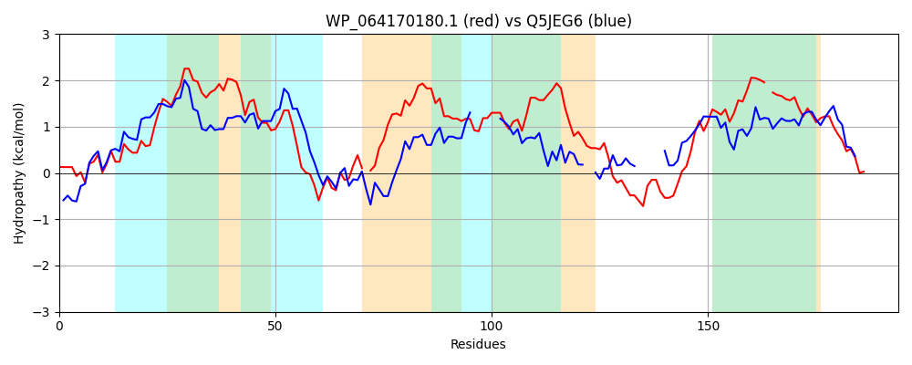

Hit Accession: Q5JEG6
Hit TCID: 4.F.1.3.1
Hit Description: gnl|BL_ORD_ID|14388 gnl|TC-DB|Q5JEG6|4.F.1.3.1 CDP-alcohol phosphatidyltransferase OS=Thermococcus kodakarensis (strain ATCC BAA-918 / JCM 12380 / KOD1) GN=TK0059 PE=3 SV=1
Mach Len: 194
e:0.000000
Query TMS Count : 4
Hit TMS Count: 4
TMS-Overlap Score: 2.600000
Predicted Substrates:CHEBI:7793;phosphate(3-)
BLAST Alignment:
Score: 165 , Bit scores: 68 bits, E-value: 1.9e-14, Alignment length: 194, Percentage identity: 28
Query: 10 LKPLLNAVAGALDRPGISPDGLTLLGFAIGVLALPFLALGWYSAALVAILFNRLLDGLDGALARRRGLTDA-GGFLDIALDFLFYALVPFGFILADPLNNALAGAWLLFAFIGTGSSFLAFAALAARHQIANPGYAHKSLYYLGGLTEGTETILLFVLGCLFPA-YFAWLAWLFGALCWLTTATRICSGYQTLK 201
+K L A+ L + G++P+ +T +G I +L L A V +L +D LDG LAR G T G FLD D + V FG L + W L G+ +++ R ++A G G+ E E +L+ + L A Y W ++ G L W+T R+ + YQ LK
Sbjct: 9 VKGYLEAIVKPLAKAGVTPNTITFIGLLISLLGAYLFYLQRPRLAAVILLIGSAIDALDGTLARMTGKTSRFGAFLDSTFDRISDGAVLFGIALGN------LADWRLTFLTFMGAYLVSYE--RCRAELAGSG------TLAVGIAERAERLLILMAFSLAGAEYVKWGVYIVGVLAWITVFQRMWAAYQRLK 188 | Protein Hydropathy Plots: |
|---|
|  |  |
Pairwise Alignment-Hydropathy Plot:
|
|---|
|  |